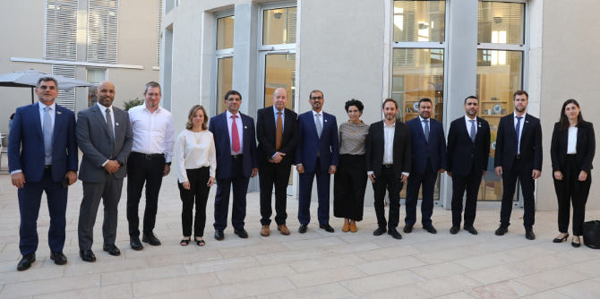
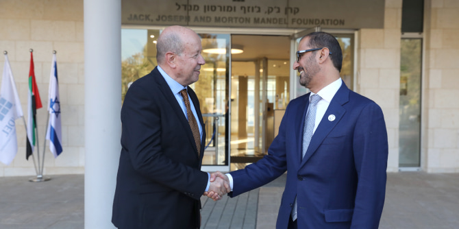
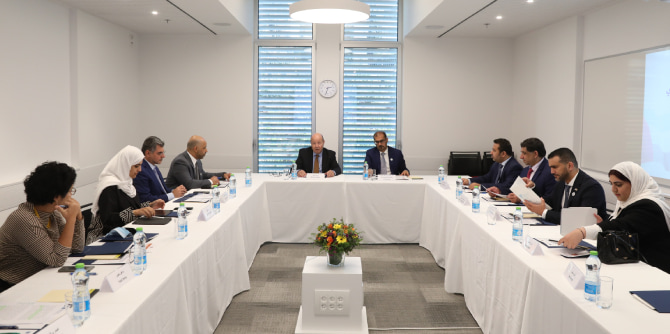
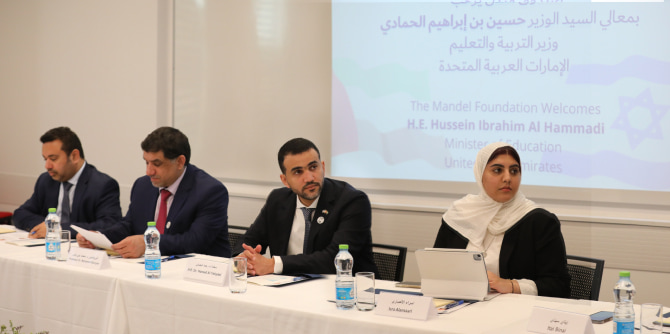

 צילום: אביר סולטן
בין חברי המשלחת מאיחוד האמירויות היו גם הממונה על העניינים האקדמיים במשרד החינוך,
ד"ר מוחמד אלמעלא; יועץ השר לענייני השכלה גבוהה,
פרופ' מוחמד בני-יאס; מנהלת מחלקת המחקר המדעי והטכנולוגיה במשרד החינוך, ד"ר הינד אלטיר ובכירים נוספים.
צילום: אביר סולטן
השר אלחמאדי וחברי המשלחת הביעו הערכה רבה למערכת החינוך הישראלית ובעיקר למערכת ההשכלה הגבוהה המצטיינת של ישראל. הם הביעו עניין רב בנושאים שהוצגו לפניהם – בעיקר בכל הנוגע לפיתוח תוכניות מנהיגות בחברה מגוונת ורבת-פנים. כמו כן הדגישו המשתתפים את חשיבותו של תחום מדעי הרוח ודנו בפיתוח תחום לימודי הרוח ובשילובם במוסדות האקדמיים כנדבך נוסף וחשוב בלימודי ההנדסה.
צילום: אביר סולטן
יעל הס, מנהלת מכון מנדל למנהיגות,
מאיה בוזו-שורץ, מנהלת יחידת בוגרות ובוגרי מנדל ועדו ברקן, מנהל תוכנית מנדל למנהיגות באקדמיה בהכשרה להוראה, הציגו לפני האורחים את היחידות והתוכניות השונות של הקרן, המיועדות לאוכלוסיות מגוונות. לבקשתו של השר אלחמאדי יימשך הקשר בין משרד החינוך של איחוד האמירותיות הערביות ובין קרן מנדל-ישראל גם בהמשך, באמצעים מקוונים, ובקרוב ייערך מפגש נוסף באמצעות זום.
צילום: אביר סולטן
{kind=link}
{kind=link}
{kind=link}
{kind=link}